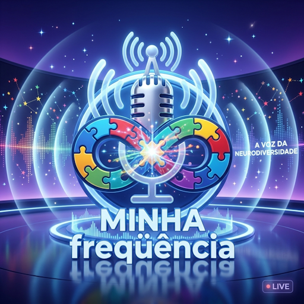

UMA RÁDIO FEITA PARA VOCÊ
Sua mente tem
uma frequência.
Informação, acolhimento e boas conversas sobre neurodiversidade — no seu tempo, do seu jeito.
TEATDAHTODNeurodiversidade

CONEXÃO NO SEU RITMO
ESCUTE COM CALMA. VOCÊ ESTÁ EM BOA COMPANHIA.ROLE PARA DESCOBRIR ↓
SINTONIZE SUA ESCUTA
O que você quer ouvir?
ESCUTA SOB DEMANDA
Volume80%
Pronto para ouvir
Aperte o play para começar. Os programas tocam em sequência, no seu ritmo.
Enviar mensagem à equipe✳
UM LUGAR DE ESCUTA
Feita com carinho.
Para todas as formas de sentir.
A Minha Frequência é um espaço acolhedor para conversar e aprender sobre TEA, TDAH, TOD e o universo da neurodiversidade. Dê o play e venha com a gente.